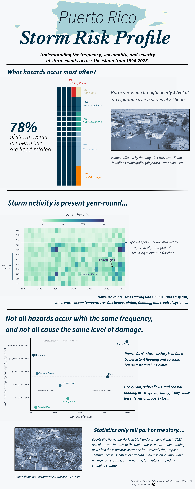

My Motivation Behind this Infographic
Having grown up in Puerto Rico, extreme weather events are not abstract concepts but lived experiences. Hurricanes, floods, and severe storms have shaped both the physical landscape of the island and the everyday lives of its residents. This project explores how different hazards contribute to economic damage in Puerto Rico and when these events most frequently occur.
My question
To better understand Puerto Rico’s hazard landscape, I asked three questions:
- What hazards dominate storm records in Puerto Rico?
- When during the year do these hazards occur most frequently?
- Which hazards cause the greatest economic losses?
Data sources
Describe the dataset.
NOAA Storm Events Database
- Time frame: 1996–2025
This period was selected since 1996 marks the year that NOAA event reporting became standardized.
- Variables used (event type, property damage, dates)
cleaning steps
converting damage values
Extracting time features
The infographic

The infographic highlights three key patterns. First, flood-related hazards dominate Puerto Rico’s storm records. Second, storm activity peaks during the Atlantic hurricane season between August and October. Finally, while hurricanes are relatively rare events, they account for some of the largest economic losses.
Infographic Design Thinking
Selecting the right visualization for each part of this project was essential to tell a clear, cohesive story about storm hazards in Puerto Rico. Each plot answers a different question: the what, when, and so what. Together, they build a complete picture of risk.
Waffle chart: What hazards occur most often?
I chose a waffle chart to communicate the composition of storm events across Puerto Rico. Because each square represents one percent of all recorded events, the viewer can immediately grasp the dominance of flood‑related hazards, which make up nearly four‑fifths of all reports. The waffle format is ideal for showing parts of a whole, and its clean geometry provides a simple, intuitive entry point into the broader narrative.
Heatmap: When do storm events happen?
The heatmap reveals the seasonality of storm activity over three decades. By mapping event counts across month‑year combinations, the visualization highlights clear clustering during the June–November hurricane season, while also showing that storm events—especially heavy rain and flooding—occur throughout the year. This format is particularly effective for uncovering temporal patterns, making it easy to see both long‑term trends and seasonal spikes.
Scatter plot: How severe are these events?
The scatter plot compares event frequency with total recorded property damage to allow for a direct look at the trade‑offs between how often hazards occur and how destructive they are. This visualization makes it clear that hurricanes, although rare, cause extreme economic losses, while flash floods and floods occur frequently and collectively contribute substantial damage. The plot helps contextualize risk by showing that Puerto Rico faces both high‑frequency, moderate‑impact hazards and low‑frequency, high‑impact events.
Structuring the infographic
The visual hierarchy of the infographic is designed to guide the reader through the story in a clear, intuitive way. Each section answers a progressively deeper question about storm hazards in Puerto Rico, moving from broad context to a more granular insight.
The flow follows an overview - pattern - consequence structure:
- Hazard composition
The infographic opens with the waffle chart because it establishes the foundation of the story: what types of storm events occur most often? This overview orients the reader and highlights the dominance of flood‑related hazards before introducing any temporal or economic complexity.
- Seasonality
From there, the reader moves naturally into the heatmap, which adds a temporal dimension. After understanding what hazards are most common, the next logical question is when they occur. The heatmap reveals clear seasonal clustering during hurricane season while also showing that storm activity persists year‑round.
- Economic impact
The final visualization—the scatter plot—adds depth by connecting frequency to severity. Once the reader understands what hazards occur and when, the next step is understanding so what? This plot shows the economic consequences of different hazard types, highlighting the contrast between high‑frequency floods and low‑frequency but high‑impact hurricanes.
Color palette
The color palette for this infographic was chosen to evoke a storm‑themed, coastal atmosphere while also maintaining clarity, accessibility, and consistency across all visual elements. Because the data focus heavily on water‑related hazards, the palette centers on cool blues and teals, which are also supported by warm accent colors for contrast and semantic meaning. To keep the infographic cohesive, the same palette is used across all three charts, the background, and the toned FEMA/AP photographs.
The palette follows three guiding principles:
- Storm‑themed, intuitive color associations
Water‑related hazards dominate Puerto Rico’s storm history, so the palette leans into navy, teal, turquoise, and sky blue. These colors evoke rainfall, flooding, and coastal storms while reinforcing the seriousness of the topic. Warm colors—red and orange—are reserved for hazards like fire or heat, which are less common but still important to distinguish.
- Consistency across charts
All three visualizations use the same set of colors, which helps the reader recognize hazard categories instantly as they move through the infographic. This consistency strengthens the narrative flow and reduces cognitive load, allowing the viewer to focus on the insights rather than re‑learning the color system in each panel.
- Accessibility and clarity
The palette was chosen with accessibility in mind. The blues and warm tones are colorblind‑friendly, and the contrast between categories is strong enough to remain legible for viewers with low vision or when printed. Backgrounds and text colors were also selected to maintain high readability and avoid visual clutter.
Typography
I chose a combination of Libre Baskerville and Source Sans 3 to balance clarity, professionalism, and visual warmth.
- Libre Baskerville for the title
I felt that this font gave an editorial look without feeling decorative or overwhelming.
- Source Sans 3 for body text and annotations
Source Sans 3 is used throughout the body text, subtitles, labels, and annotations. I felt it was a readable sans‑serif typeface for the audience. It supports accessibility and ensures that the narrative and data labels remain easy to scan. Its simplicity paired well with the title font, which I felt created a balanced design.
Clear hierarchy for readability
The type hierarchy is intentionally structured to guide the reader through the infographic:
Title: Libre Baskerville, bold and prominent
Section headers: Source Sans 3, heavier weight
Subheaders and annotations: Source Sans 3, medium weight
Body text and captions: Source Sans 3, regular weight
Challenges and trade‑offs
Every visualization project comes with its own set of constraints, and this one was no exception. Working with the Storm Events Database required a lot of decision‑making. It wasn’t necessarily about how to visualize the data, but about what the data could realistically support. Several challenges shaped the final design.
Skewed and inconsistent damage data
One of the biggest hurdles was figuring out how to represent economic losses. Property damage values in the dataset are extremely skewed: many events report zero damage, while a handful of hurricanes account for almost all recorded losses. When I explored median damage values, they were often zero across most hazard categories, which made the metric misleading. Because of this, I opted to use total cumulative damage instead. It’s not perfect since it’s heavily influenced by rare, catastrophic events, but I feel that this metric more accurately reflects the economic reality of storm impacts in Puerto Rico.
Choosing meaningful hazard categories
Another challenge was deciding how to group event types. NOAA’s database includes dozens of categories, some of which are redundant or inconsistently used. I had to strike a balance between staying true to the raw data and creating categories that made sense to readers. This meant collapsing certain event types, removing hazards with very few observations, and focusing on the categories that actually shaped Puerto Rico’s storm landscape. Every grouping decision was a trade‑off between granularity and clarity.
Balancing clarity and complexity
This was a recurring challenge: how to simplify without oversimplifying. Throughout the design process, I kept running into the tension between wanting to show nuance and wanting the infographic to remain readable. For example, I initially experimented with including drought and wildfire in the scatter plot, but they added noise without contributing meaningfully to the story. Removing them made the visualization cleaner and sharpened the narrative around water‑related hazards, which dominate the dataset.
Representing seasonality without overstating patterns
The heatmap also required careful interpretation. While hurricane season is clearly visible, the pattern isn’t as dramatic as one might expect. Storm events happen year‑round. I had to design the heatmap in a way that acknowledged the seasonal signal without exaggerating it. I had to use a restrained color scale and avoid visual modifications that would artificially amplify the pattern.